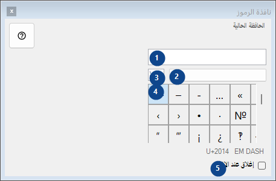
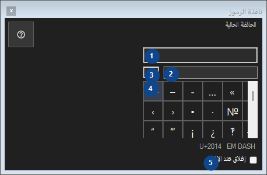

نافذة الرموز
الغرض
لوحة من الرموز النادرة: النقر ينسخ الرمز إلى الحافظة؛ كل شيء يبقى على هذا الكمبيوتر.


ترتيب الاستخدام
اقرأ الشروح المرقمة واختر القيم المطلوبة ثم تابع باستخدام أمر النافذة.
العناصر
1. الحافظة الحالية
الحافظة الحالية
اختصاراتك2. مجموعة الرموز
مجموعة الرموز
اختصاراتك3. البحث عن الرموز
البحث بالاسم أو الكلمات المفتاحية أو رمز Unicode
اختصاراتك4. شبكة الرموز
U+2014 EM DASH
اختصاراتك5. إغلاق عند الاختيار
إغلاق عند الاختيار
اختصاراتك